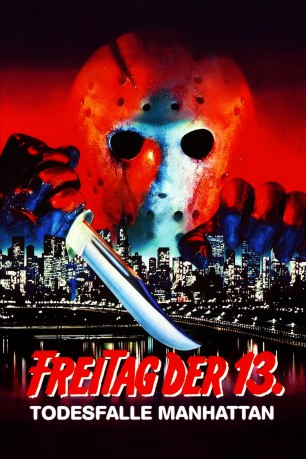

#4089 Freitag, der 13. - Teil 08 - Todesfalle Manhattan
Alternativ: Friday the 13th Part VIII: Jason Takes Manhattan
 
 IMDB-Wertung: 4.5 / 10
IMDB-Wertung: 4.5 / 10  Metascore: 0
Metascore: 0 
Die Abschlußklasse der Crystal Lake High School unternimmt mit einigen Lehrern eine Schiffahrt nach Manhattan, nicht wissend, daß der untote Massenmörder Jason sich wieder erhoben hat und mit an Bord ist, auf der Jagd nach Rennie, einem jungen Mädchen, das er noch aus seinen Kindertagen (zu Lebzeiten) kennt. Einige der Passagiere werden von Jason umgebracht, bis er nach New York gelangt und dort in den Straßen, in der U-Bahn und in der Kanalisation seine Opfer findet. Rennie kann, als sie mit dem maskentragenden Killer schließlich konfrontiert wird, erst fliehen und ihn dann - bis auf weiteres - besiegen.
Jahr: 1989
Dauer: 96 Minuten
FSK: 18
Land: USA Studio: Paramount PicturesTonspuren: DD2.0 - ,
Untertitel:
Auflösung: 1080p (1920x1080) Größe: 9031 MB
Genre: Abenteuer, Horror
Regisseur:  Rob Hedden
Rob Hedden
Drehbuch: Ann Biderman
Soundtrack:
Darsteller:
- Tiffany Paulsen als Suzi Donaldson
 Kane Hodder als Jason Voorhees
Kane Hodder als Jason Voorhees- Jensen Daggett als Rennie Wickham
- Barbara Bingham als Colleen Van Deusen
 Alex Diakun als Deck Hand
Alex Diakun als Deck Hand- Peter Mark Richman als Charles McCulloch
- Warren Munson als Admiral Robertson
 Fred Henderson als Chief Engineer Jim Carlson
Fred Henderson als Chief Engineer Jim Carlson- Scott Reeves als Sean Robertson
- Gordon Currie als Miles Wolfe
- Martin Cummins als Wayne Webber
 Kelly Hu als Eva Watanabe
Kelly Hu als Eva Watanabe Michael Benyaer als JoJo
Michael Benyaer als JoJo- Roger Barnes als Irish Cop
 Vince Cupone als Street Urchin
Vince Cupone als Street Urchin David Longworth als Sanitation Engineer
David Longworth als Sanitation Engineer- Jasper Cole als Trainer , uncredited
- Todd Caldecott als Jim Miller
- Tim Mirkovich als Young Jason Voorhees
- Ace als Toby
 Saffron Henderson als J.J. Jarrett
Saffron Henderson als J.J. Jarrett- Vincent Craig Dupree als Julius Gaw
- Sharlene Martin als Tamara Mason
- Sam Sarkar als Holmes
- Amber Pawlick als Young Rennie Wickham
- Peggy Hedden als New York Waitress
- David Jacox als Other Boxer , uncredited
Datei: X:\FSK18-Collections\Freitag, der 13\Freitag, der 13. - Teil 08 - Todesfalle Manhattan (1989, FSK18, 1920x1080).mkv seit 19.07.2016
Festplatte: FSK18
 Es gibt insgesamt 15 Filme in der Gruppe 'FSK18-Collections\Freitag, der 13'
Es gibt insgesamt 15 Filme in der Gruppe 'FSK18-Collections\Freitag, der 13'